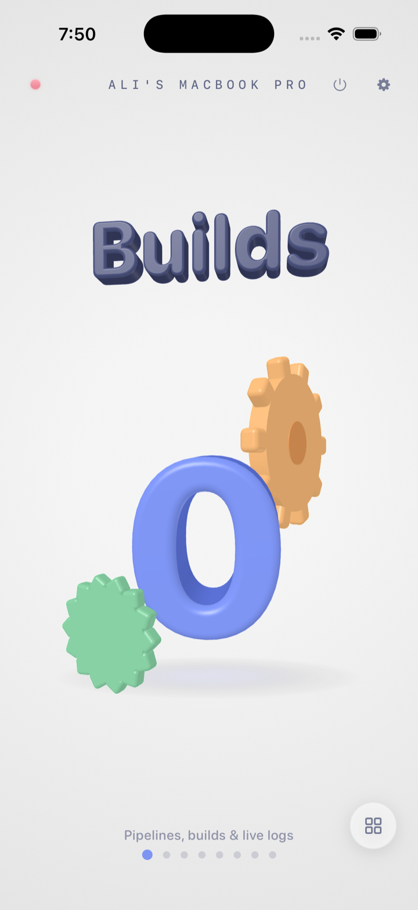
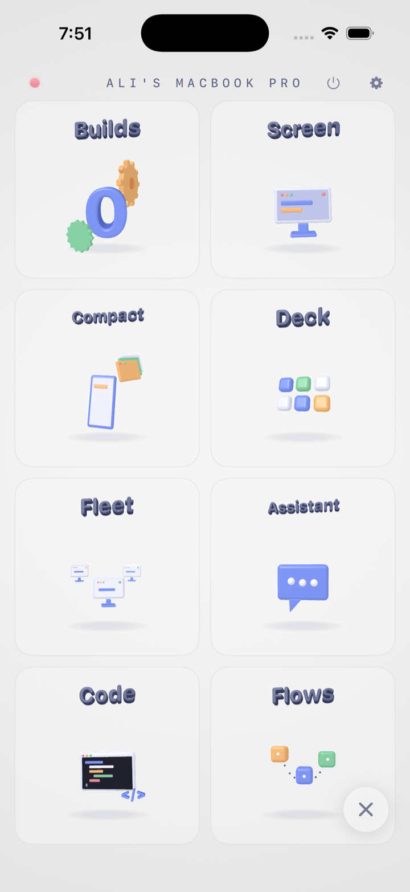
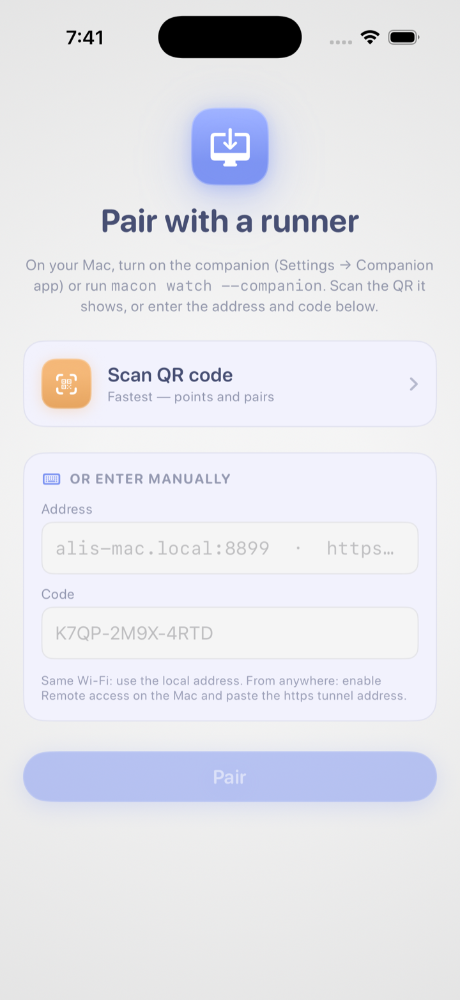

In your pocket
A free iPhone and iPad app, built like a toy in a soft 3D clay world, that reaches all the way into the Mac. Pair once with a single-use code, and it keeps finding your machine.



In your pocket
A free iPhone & iPad app, built like a toy, in a soft 3D clay world, that reaches all the way into the Mac. Tap through what it does:
Every pipeline as a live step timeline, watch, run, re-run, cancel, or edit it from the couch.
Monitor & manage
Every run is a step-by-step timeline with streaming logs, durations, and the raw console one tap away.
Logs parsed exactly like the desktop app: each step timed and expandable, live over WebSocket, deduped as it streams.
Provider, workspace, repo, branch, poll vs webhook, pipeline file, timeouts, the entire pipeline editor works from the device.
See & drive
Hardware-encoded H.264 out of the Mac, hardware-decoded on the phone, so 60 fps doesn't stutter, and 120 fps is real on ProMotion.
Streams just one window, resized to your screen and orientation. Your Mac's apps behave like phone apps, Xcode included.
Runs only while someone is watching, gated by an explicit toggle on the Mac, and macOS Screen Recording permission.
Automate
Turn the device into a Stream Deck, then go further and wire up whole automations as clay blocks on physically swinging strings.
Fully customizable keys, labels, emoji, colors, with drag-rearrange and a fill-screen grid. Liquid-glass pretty, one-tap fast.
The canvas ropes sag and swing (verlet simulation). Off by default on the Mac, flows run shell commands, so you opt in explicitly.
Code
The workspace is a mini IDE pointed at your Mac: browse the repo, edit with tabs, run real terminals, build with Xcode.
Independent PTYs at the workspace root. Tail a build, poke a simulator, commit a fix, like VS Code's panel, on a phone.
Build broke on a YAML typo? Open macon.yml in the workspace, fix it, save, re-run, without standing up.
Talk to it
Chat with models running on your own hardware, or hand the Mac a task out loud and watch it work.
Watch the live screen while the agent works underneath, approving each step, or let it run and barge in by talking over it.
Claude, OpenAI, Gemini, a local Ollama model, or any OpenAI-compatible endpoint. Keys live in the Mac's Keychain, never on the phone. All of it optional.
Power & presence
The companion keeps the Mac reachable and brings it back to life from anywhere, every power an explicit, opt-in toggle.
Works on the LAN or through a free Cloudflare tunnel, and over iCloud even when both are down. Honest about limits: FileVault preboot stays locked.
Your Mac at the center, every paired device hanging on a swinging string, live glow for the active ones, drag them around for fun.